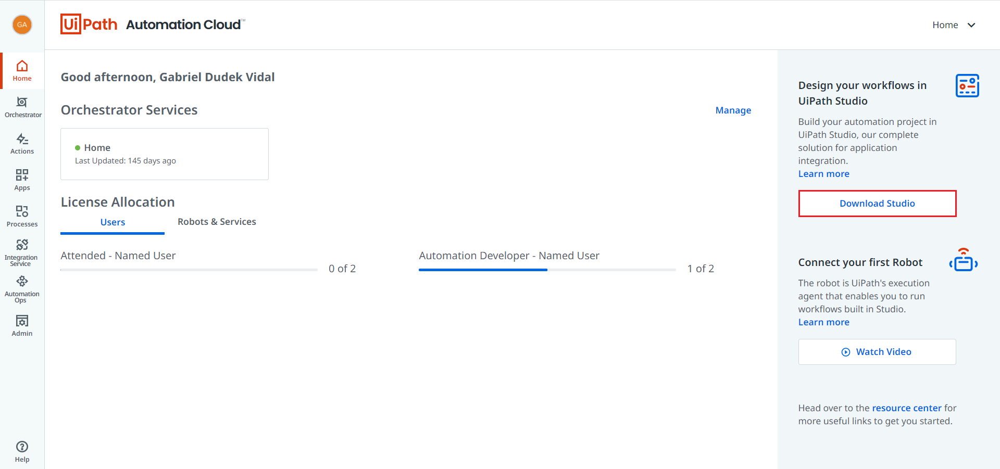

Lesson 1 - Introduction to RPA
What's RPA?
Robotic Process Automation is a technology that can help you or your company automating repetitive and rule based tasks using virtual robots. The bots act like mimics simulating humans during the processes. Besides that it's possible to run processes in background.
Which tools are used?
Nowadays there are some interesting tools to develop and execute RPA processes. This course teaches you how
to use UiPath.
Some tools:
How to install UiPath
1. Go to UiPath.com.
2. Click on Try UiPath Free.
3.Click on Sign Up With Email.

5. After the step above you'll receive an e-mail to confirm your account. After doing it you'll have acess to Automation Cloud, click on Download Studio. (Automation Cloud and other UiPath services will be explained later on during the lessons.)
 Next